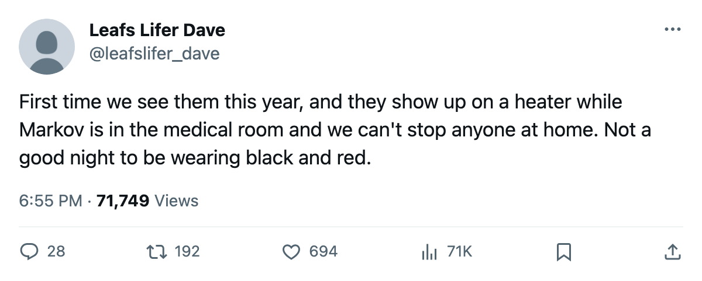

First Meeting: Carolina and Colorado Meet Tonight, and the Table Says This Much
The Avalanche are on their 6th straight win with a 12-7 road record; the Hurricanes are 9-13 at home and missing a top-pairing defenseman until February
 Ray CallumSenior correspondent · Home Ice Network
Ray CallumSenior correspondent · Home Ice NetworkThe  Carolina Hurricanes Hurricanes and the
Carolina Hurricanes Hurricanes and the  Colorado Avalanche have not played each other this season. They meet tonight in Raleigh.
Colorado Avalanche have not played each other this season. They meet tonight in Raleigh.
Colorado is 19-12-7 with 53 points, on a 6-game winning streak, and 12-7 on the road. Carolina is 11-18-6 with 44 points, on a 3-game losing streak, and 9-13 at home.
Carolina has lost 208 days to injury across 28 spells this season.  Danny Markov73 is out through 2006-02-08 with a concussion, and Brad DeFauw72 is out through 2006-03-27 with an elbow designation. Those two account for most of the long-term injury time on the season.
Danny Markov73 is out through 2006-02-08 with a concussion, and Brad DeFauw72 is out through 2006-03-27 with an elbow designation. Those two account for most of the long-term injury time on the season.
Colorado's streak and Carolina's skid
The Avalanche have scored 32 goals in their last 10 games and conceded 24. That is the highest goal total of any team in this season's last-10 window outside of the top of the Eastern Conference standings. Carolina has managed 26 in its last 10 against 36 against.
Colorado sits 5th in the Western Conference, 6 points behind 2nd-place  St. Louis. The Avalanche are on pace to finish above .500 in the road column for the first time this season; their 12-7 away record is their best through 42 games all year.
St. Louis. The Avalanche are on pace to finish above .500 in the road column for the first time this season; their 12-7 away record is their best through 42 games all year.  Jamie Storr85 has made 29 of 42 starts, and the 6-game run has gone through him without a change in net.
Jamie Storr85 has made 29 of 42 starts, and the 6-game run has gone through him without a change in net.
The Hurricanes sit 11th in the Eastern Conference, 2 points behind 8th-place Philadelphia. Their  Kevin Weekes86-led goaltending staff has dressed 34 of 43 games between him and Marcel Janota75, but neither can compensate for a defense missing its top-minute man.
Kevin Weekes86-led goaltending staff has dressed 34 of 43 games between him and Marcel Janota75, but neither can compensate for a defense missing its top-minute man.
What the injury gap means tonight
Colorado has logged 30 injury spells but only 100 days lost. The absences have been short and spread across the roster. Carolina's 208 days have landed harder because the two longest spells sit at the same position group: defensemen and a forward who played the bottom six. Carolina has been thinned for six weeks and Colorado has not.
The last time the Avalanche won 6 straight, they were 4th in the Northwest Division. They are 5th now. The last time Carolina lost 3 straight, they were in a playoff race. They are still in one, barely.
